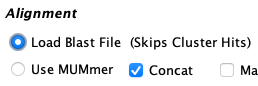

Load Blast
| Create file of proteins | Create Blast tab file | Load Blast file | Example and details |
This page describes creating project protein files, running blast, and loading a file of blast results.
→ It is necessary to have loaded the GFF file with the CDS option (v5.8.7 or later); see
Exon/CDS for details.
→ The xToSymap program started including CDSs in the GFF file in release v5.8.6.
Pros: (1) Loading a blast file is much faster than SyMAP running MUMmer. (2) It tends to get more gene pair hits.
Cons: (1) It does not work if one of the genomic sequence is not annotated and does not perform gene discovery. (2) It loses the exon/intron alignment coordinates so the alignment to the 2D exon/intron structure is incorrect. The 2D and Queries hit alignments options are disabled since they would be wrong. (3) The user must obtain and manually run Blast or Diamond.
The steps are very easy:
- Export the protein sequences from SyMAP (you must use the SyMAP exported proteins).
- Run Blast or Diamond on them and put the results in data/seq_results/<proj1>_to_<prot2>/blast.
- Set the Load Blast File, then run Selected Pairs.
Create protein files
| 
|
Create Blast tab file
SyMAP does not run Blast or Diamond for you. You must download Blast or Diamond.The output file must be the tabular format (-outfmt 6).
When SyMAP loads the hits, it does not filter them. Hence, you should have Blast or Diamond only produce the top 5 hits per gene (-max_target_seqs 5).
For the Demo, you can copy and paste the commands Example below;
Load Blast file
|
Start SyMAP and select
Pair Parameters.
Select the Load Blast File option.
When you select Save, the default directory data/<proj1>_to_<proj2>/blast will be created. |  |
|
Exit SyMAP, move the blast tab file to data/<proj1>_to_<proj2>/blast,
restart SyMAP and select Selected Pair (see popup on the right).
SyMAP will load the blast hits, then execute the Collinear algorithm and the Synteny algorithm. | 
|

- SyMAP will load the first file in the directory with a .tab suffix, and if there is no .tab, it will use the first file it finds.
- Only one hit per gene pair will be loaded; it will be the one with the best bit-score. The blast hits are not clustered like the MUMmer hits are.
- The hits coordinates are start=(1st CDS_start + blast_hit_start), end=(1st CDS_start + blast_hit_len).
That is, it does not align correctly with the exons.
Example and Details
By default, the protein files were written to /export.Diamond: To run diamond on the demo files:
cd export diamond makedb --in demoBrapPr.faa -d brapdb diamond blastp -q demoArabPr.faa -d brapdb -o diam.tab -f 6 -k 5 -p 4 mv diam.tab ../data/seq_results/demoArab_to_demoBrap/blast
Blast: The downloaded executables worked find. To run blast on the demo files:
cd export makeblastdb -in demoBrapPr.faa -dbtype prot -out brapdb blastp -query demoArabPr.faa -db brapdb -out blast.tab -outfmt 6 -max_target_seqs 5 -num_threads 4 mv blast.tab ../data/seq_results/demoArab_to_demoBrap/blastOnly put one .tab file in the data/seq_results/demoArab_to_demoBrap/blast directory.
| Go to top |
Email Comments To: cas1@arizona.edu